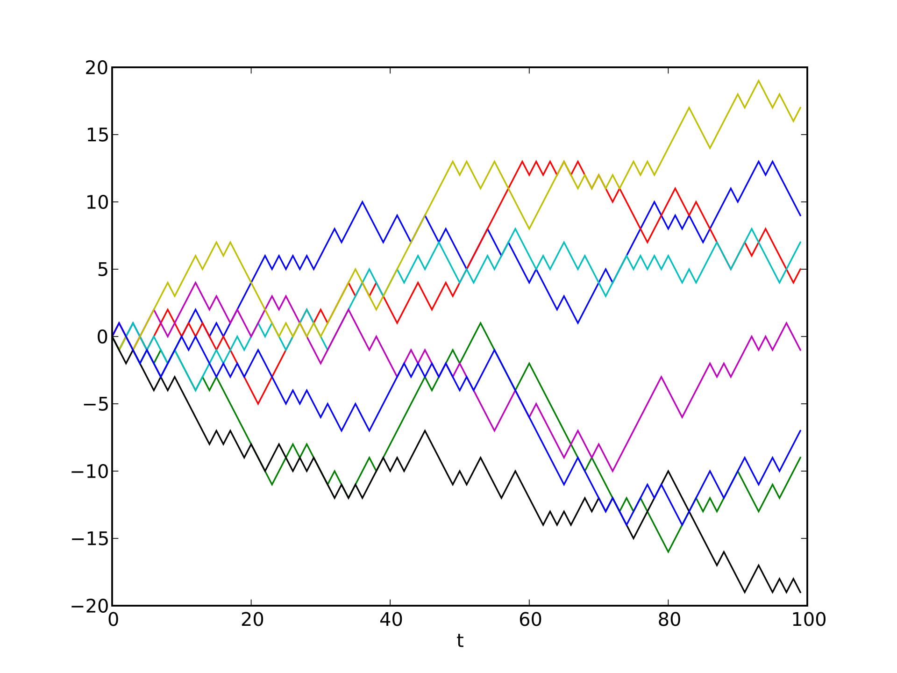
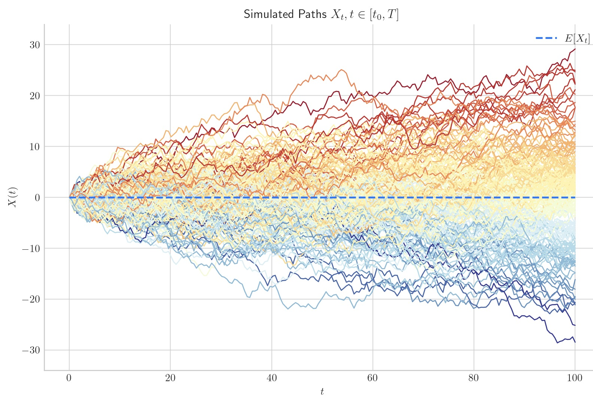

7 Stochastic Processes
8 Stochastic Processes
We have already mentioned Brownian motion, characterized by a set of particles moving randomly, each independent of the others. Like any physical phenomenon, Brownian motion is also described by a mathematical model, in this case called a stochastic model due to its intrinsic random nature: this is the Wiener process, which we will explore in more detail below.
More generally, we will delve into the study of multiple models, described by stochastic differential equations whose solutions are continuous trajectories. Such models are used in many fields of physics and beyond (biology, finance, and so on). We will limit ourselves to exploring them to the point where we can use the tools in practical applications, so the treatment as a whole will be non-rigorous from a mathematical point of view, ignoring the concepts and rigors of measure theory, which is the formal mathematical basis in the field of stochastic processes.
8.1 Introduction to Probability Theory
Before talking about stochasticity, it is necessary to introduce the theory that underlies it: probability theory. Below we will see how to define the fundamental unit of stochastic processes, namely random variables.
Let’s start with a simple example, typical in the introduction of statistics courses: the coin toss. If we toss a coin once, two outcomes are possible: heads or tails; if we toss it twice, the number of outcomes doubles, from two to four, and so on; by tossing a coin \(N\) times, therefore, \(2^N\) total outcomes will be possible, also called realizations of the random experiment. The set of realizations is called the sample space and is denoted by \(\Omega\):
\[\begin{equation*} \Omega=\left\{(0,0,\dots,0),(1,0,\dots,0),(0,1,\dots,0),(1,1,\dots,0),\dots,(1,1,\dots,1)\right\} \end{equation*}\]
having indicated, by convention, the outcome “heads” with \(1\) and the outcome “tails” with \(0\).
Let’s now imagine we want to take a measurement related to this experiment, for example, the number of heads. The number of possible measurements will clearly be \(N+1\), and these define what is called the state space \(E\):
\[\begin{equation*} E=\{0,1,2,\dots,N\} \end{equation*}\]
A random variable \(Y\), from a mathematical point of view, is nothing more than a function that maps elements from the sample space to the state space:
\[\begin{equation} Y:\Omega\to E \end{equation}\]
Furthermore, this function must be . This occurs if for any subset \(E_S\subseteq E\) the pre-image of the function relative to \(Y^{-1}\left(E_S\right)\), which would be
\[\begin{equation*} Y^{-1}\left(E_S\right)=\left\{\omega\in\Omega|Y(\omega)\in E_S\right\} \end{equation*}\]
is a measurable set in \(\Omega\). As already mentioned in the premises, we will not delve too deeply into the formal aspects, but it is enough for us to know that without this condition we could not define the concept of probability.
To each element \(y_i\in E\), in fact, we can associate the probability \(p_i\) through the following formula:
\[\begin{equation} p_i=\sum_{\omega\in\Omega:Y(\omega)=y_i}P(\omega) \end{equation}\]
where \(P(\omega)\) is the probability relative to the realization \(\omega\). Returning to the coin toss, for example, each realization has the same probability of occurring as the others, so it will be \(P\left(\omega_1\right)=P\left(\omega_2\right)=\dotsc=P\left(\omega_{2^N}\right)\). Formally we define the function \(P\) as
\[\begin{equation*} P:\Omega\to[0,1]:\sum_{\omega\in\Omega}P(\omega)=1 \end{equation*}\]
Due to the normalization to one, if all realizations have the same probability, then we will assign to each of them \(P\left(\omega_i\right)=\frac{1}{2^N}\).
If the set \(\Omega\) is finite, then \(Y\) is certainly measurable, and it is therefore always possible to define a random variable. The problem becomes more complicated when we consider uncountable sets, because in that case it makes no sense to assign a probability to a single element of \(\Omega\). We will in fact have to associate probabilities with intervals, that is, with sets called events, which can be bounded only from above or also from below.
Indicating the random variable with \(X\), the possibilities are as follows:
\[\begin{align*} &\{X\leqslant x\}=\{\omega\in\Omega|X(\omega)\leqslant x\\ &\{a\leqslant X\leqslant b\}=\{\omega\in\Omega|a\leqslant X(\omega)\leqslant b \end{align*}\]
where \(x,a,b\in\mathbb{R}\).
8.2 Definition of a Stochastic Process
We now have the tools to define what a stochastic process is.
A **stochastic process** is a *collection* of random variables
\begin{equation*}
\{x(t,\omega),t\in T,\omega\in\Omega\}
\end{equation*}
where $T$ is an **ordered set** and $\Omega$ is a **sample space**.Given a fixed time \(\bar{t}\), the quantity \(x\left(\bar{t},\omega\right)\) indicates a random variable that maps elements of \(\Omega\) into the state space \(E\) relative to the process.
By fixing \(\omega=\bar{\omega}\), instead, we obtain a function of time \(x\left(t,\bar{\omega}\right)\) that describes a deterministic trajectory, which is called a sample path or stochastic realization.
In general, the stochastic variable is indicated for simplicity by \(x(t)\), ignoring the dependence on \(\omega\), because what is measured is a single realization; moreover, in the context of stochastic processes, mainly the global properties are studied, such as mean, variance, and so on, which depend solely on time, being calculated with respect to all possible realizations in \(\Omega\).
Figure (fig:processi-stocastici-esempio-semplice) shows a simple example of a stochastic process in which \(T=\{0,1,2,3\}\) and \(E=\{-1,0,1\}\), with a particle that can move through the three states of \(E\) at the time instants indicated by the elements of \(T\). In particular, three different stochastic realizations are shown, associated therefore with different \(\omega\).
The random walk that we introduced in the last chapter is nothing more than a stochastic process in which \(T=\mathbb{N}\) and \(E=\mathbb{Z}\). We recall that in that case there is a constraint according to which the particle is forced to move from its position at each time step. Some realizations are shown in figure (fig:processi-stocastici-random-walk-esempio).

With the random walk, we move to an infinite, but still countable, number of trajectories. For the description of continuous systems, such as Brownian motion, we must move to a number of trajectories that is not only infinite, but also uncountable: in that case, in fact, we will have a process in which \(T=\mathbb{R}^+\) and \(E=\mathbb{R}\). A condition that is imposed, in this specific case, is that the entire distribution of particles is centered at the origin, as we can observe in the example reported in figure (fig:processi-stocastici-processo-browniano-esempio).

In this last example, each realization is nothing more than a function \(x(t)\in C^0([0,T])\).
8.3 Wiener Process
We can now formalize the process underlying Brownian motion, called the Brownian process or Wiener process. It is a real-valued process in which \(T=\mathbb{R}^+\) and \(E=\mathbb{R}\) and whose sample path turns out to be a function of time \(B(t)\). For simplicity, we will only study the one-dimensional case.
This process must meet three criteria:
\(\red{\raisebox{.5pt}{\textcircled{\raisebox{-.9pt} {1}}}}\) All trajectories at the initial time are at the origin of the reference system:
\[\begin{equation} B(0)=0 \end{equation}\]
\(\red{\raisebox{.5pt}{\textcircled{\raisebox{-.9pt} {2}}}}\) For each pair of times \(\left(t_1,t_2\right)\), with \(t_2>t_1\), the difference \(B\left(t_2\right)-B\left(t_1\right)\) is normally distributed as follows:
\[\begin{equation} B\left(t_2\right)-B\left(t_1\right)\sim\mathcal{N}\left(0,t_2-t_1\right)=\frac{1}{\sqrt{2\pi\left(t_2-t_1\right)}}e^{-\frac{\Delta x^2}{2\left(t_2-t_1\right)}} \end{equation}\]
where \(\Delta x\) is the increment of the stochastic process in the passage from a time \(t_1\) to a time \(t_2\).
\(\red{\raisebox{.5pt}{\textcircled{\raisebox{-.9pt} {3}}}}\) For each pair of times \(\left(t_1,t_2\right)\), with \(t_2>t_1\), the difference \(B\left(t_2\right)-B\left(t_1\right)\) is independent of any past value, that is, of \(B\left(t<t_1\right)\).
8.3.1 Important Properties
Taking a time \(t=\bar{t}\) as a reference and considering the increment \(\bar{t}+\Delta t\), from criterion \(\red{\raisebox{.5pt}{\textcircled{\raisebox{-.9pt} {2}}}}\) it follows:
\[\begin{equation} B\left(\bar{t}+\Delta t\right)-B\left(\bar{t}\right)\sim\mathcal{N}(0,\Delta t) \end{equation}\]
This means that the increments are not only independent of each other, but they also do not depend on the moment in which the increment is considered, in the sense that they depend solely on the time difference \(\Delta t\): this property is called stationarity, because the distribution of the increments is invariant with respect to time translation.
Since this property is valid, then in particular for \(t=0\) it follows:
\[\begin{equation} B(0+\Delta t)-\cancel{B(0)}=B(\Delta t)\sim\mathcal{N}(0,\Delta t) \end{equation}\]
If \(B(\Delta t)\) is distributed according to a normal distribution centered at zero with variance \(\Delta t\), then we can show that the expected value of its absolute value \(\abs{B(t)}\) is equal to the standard deviation, that is \(\sqrt{\Delta t}\). We will have in fact that
\[\begin{equation*} \langle\abs{B(\Delta t)}\rangle=\int_{-\infty}^{+\infty}\abs{x}\frac{1}{\sqrt{2\pi\Delta t}}e^{-\frac{x^2}{2\Delta t}}dx=2\int_0^{+\infty}x\frac{1}{\sqrt{2\pi\Delta t}}e^{-\frac{x^2}{2\Delta t}}dx \end{equation*}\]
Let’s perform a change of variable to solve the integral:
\[\begin{equation*} y=\frac{x}{\sqrt{\Delta t}} \ \iff \ dx=\sqrt{\Delta t}dy \end{equation*}\]
\[\begin{align*} \langle\abs{B}(\Delta t)\rangle&=2\int_0^{+\infty}y\sqrt{\Delta t}\frac{1}{\sqrt{2\pi\Delta t}}e^{-\frac{y^2}{2}}\sqrt{\Delta t}dy=2\sqrt{\Delta t}\int_0^{+\infty}y\frac{1}{\sqrt{2\pi}}e^{-\frac{y^2}{2}}dy=\\ &=2\sqrt{\Delta t}\frac{1}{\sqrt{2\pi}}\left(-e^{-\frac{y^2}{2}}\right)\bigg|_0^{+\infty}=\sqrt{\frac{2}{\pi}}\sqrt{\Delta t} \end{align*}\]
We therefore find that
\[\begin{equation*} \langle\abs{B(\Delta t)}\rangle\sim\sqrt{\Delta t} \end{equation*}\]
For \(\Delta t\to0^+\), that is, when the increments become very small, the average behavior is able to capture the global one, so we can state that
\[\begin{equation} \boxed{\abs{B(\Delta t)}\sim\sqrt{\Delta t}} \end{equation}\]
This last result will be useful in calculations that we will see later.
As we have already guessed, a realization of the Wiener process is nothing more than the fundamental solution of the diffusion equation in which \(D=1\). This solution, which corresponds to the propagator of the process, is in fact given by
\[\begin{equation*} w\left(x,t|x_0,t_0\right)=\frac{1}{\sqrt{2\pi\left(t-t_0\right)}}e^{-\frac{\left(x-x_0\right)^2}{2\left(t-t_0\right)}} \end{equation*}\]
which is precisely what is written in (eq:processi-stocastici-wiener-traiettoria).
By definition, the correlation function for two random variables is given by the expected value of their product, that is, by the covariance.
Considering two time instants \(t_1\) and \(t_2\), with \(t_1\leqslant t_2\), the correlation function will therefore be
\[\begin{equation*} \left\langle B\left(t_1\right)B\left(t_2\right)\right\rangle \end{equation*}\]
To calculate the result, we add and subtract \(B\left(t_1\right)\) from \(B\left(t_2\right)\):
\[\begin{equation*} \left\langle B\left(t_1\right)\left[B\left(t_2\right)-B\left(t_1\right)+B\left(t_1\right)\right]\right\rangle=\left\langle B\left(t_1\right)\left[B\left(t_2\right)-B\left(t_1\right)\right]\right\rangle+\left\langle B\left(t_1\right)^2\right\rangle \end{equation*}\]
According to criterion \(\red{\raisebox{.5pt}{\textcircled{\raisebox{-.9pt} {3}}}}\), the mean value of the product is nothing more than the product of the mean values:
\[\begin{align*} \left\langle B\left(t_1\right)\left[B\left(t_2\right)-B\left(t_1\right)\right]\right\rangle&=\left\langle\left[B\left(t_1\right)-B(0)\right]\left[B\left(t_2\right)-B\left(t_1\right)\right]\right\rangle=\\ &=\left\langle\left[B\left(t_1\right)-B(0)\right]\right\rangle\left\langle\left[B\left(t_2\right)-B\left(t_1\right)\right]\right\rangle \end{align*}\]
From criterion \(\red{\raisebox{.5pt}{\textcircled{\raisebox{-.9pt} {2}}}}\), both expected values are zero, so what remains is:
\[\begin{equation*} \left\langle B\left(t_1\right)B\left(t_2\right)\right\rangle=\left\langle B\left(t_1\right)^2\right\rangle \end{equation*}\]
Let’s add and subtract \(\left\langle B\left(t_1\right)\right\rangle^2\):
\[\begin{equation*} \left\langle B\left(t_1\right)B\left(t_2\right)\right\rangle=\left\langle B\left(t_1\right)^2\right\rangle-\left\langle B\left(t_1\right)\right\rangle^2+\cancel{\left\langle B\left(t_1\right)\right\rangle}^2=Var\left[B\left(t_1\right)\right]=t_1 \end{equation*}\]
Without having to specify that \(t_1<t_2\), the result in general is therefore given by
\[\begin{equation} \boxed{\left\langle B\left(t_1\right)B\left(t_2\right)\right\rangle=\min\left(t_1,t_2\right)} \end{equation}\]
This result means that, for a fixed time \(t_2\), the correlation is higher the closer \(t_1<t_2\) is to \(t_2\), and conversely, the farther away \(t_1\) is, the lower the correlation.
From the other perspective, once \(t_1\) is fixed, the correlation with a future event is always equal and constant: in other words, a future event does not add any “information” to the ongoing process. This reflects nothing other than the property of incremental independence given by criterion \(\red{\raisebox{.5pt}{\textcircled{\raisebox{-.9pt} {3}}}}\).
The process described by
\[\begin{equation} z(t)=\frac{1}{\sqrt{c}}B(ct) \ \text{with} \ \ c\in\mathbb{R}^+ \end{equation}\]
is in turn the realization of a Wiener process, and as such it is distributed in the same way.
There are two ways to prove this result. The first, trivially, is to verify all the criteria that define Brownian motion:
Another way to prove it is through the use of the characteristic function: if we show that the characteristic function associated with one variable is equal to that associated with the other, then the two variables must necessarily follow the same distribution. In other words, we must show that
\[\begin{equation} \left\langle e^{i\lambda B(t)}\right\rangle=\left\langle e^{i\lambda z(t)}\right\rangle \end{equation}\]
Let’s therefore calculate the characteristic function associated with \(B(t)\), which by definition is given by
\[\begin{align*} &\left\langle e^{i\lambda B(t)}\right\rangle=\int_{-\infty}^{+\infty}e^{i\lambda x}\frac{1}{\sqrt{2\pi t}}e^{-\frac{x^2}{2t}}dx=\frac{1}{\sqrt{2\pi t}}\int_{-\infty}^{+\infty}e^{-\frac{x^2}{2t}+i\lambda x}dx=\\ &=\frac{1}{\sqrt{2\pi t}}\int_{-\infty}^{+\infty}e^{-\frac{1}{2t}\left(x^2-2i\lambda tx\right)}dx \end{align*}\]
Let’s complete the square in the exponent:
\[\begin{equation*} x^2-2i\lambda tx=x^2-2i\lambda tx-\lambda^2t^2+\lambda^2t^2=\left(x-i\lambda t\right)^2-\lambda^2t^2 \end{equation*}\]
Let’s substitute:
\[\begin{equation*} \left\langle e^{i\lambda B(t)}\right\rangle=\frac{1}{\sqrt{2\pi t}}\int_{-\infty}^{+\infty}e^{-\frac{1}{2t}\left(x-i\lambda t\right)^2}e^{-\frac{\lambda^2t}{2}}dx=\frac{1}{\cancel{\sqrt{2\pi t}}}e^{-\frac{\lambda^2t}{2}}\cancel{\sqrt{2\pi t}} \end{equation*}\]
We have thus found that
\[\begin{equation} \boxed{\left\langle e^{i\lambda B(t)}\right\rangle=e^{-\frac{\lambda^2}{2}t}} \end{equation}\]
At this point we can prove (eq:processi-stocastici-wiener-proprieta-riscalamento-funzioni-caratteristiche) simply by substitution:
\[\begin{equation*} \left\langle e^{i\lambda z(t)}\right\rangle=\left\langle e^{i\frac{\lambda}{\sqrt{c}}}B(ct)\right\rangle=e^{-\frac{\left(\frac{\lambda}{\sqrt{c}}\right)^2}{2}ct}=e^{-\frac{\lambda^2}{2c}ct}=e^{-\frac{\lambda^2}{2}t} \end{equation*}\]
The process described by
\[\begin{equation} z(t)= \begin{cases} 0 \ &t=0\\ tB\left(\frac{1}{t}\right) \ &t>0 \end{cases} \end{equation}\]
is in turn the realization of a Wiener process, and as such it is distributed in the same way.
We can proceed similarly to what we saw with rescaling, through the characteristic function:
\[\begin{equation*} \left\langle e^{i\lambda z(t)}\right\rangle=\left\langle e^{i\lambda tB(\frac{1}{t})}\right\rangle=e^{-\frac{\lambda^2t^2}{2}\frac{1}{t}}=e^{-\frac{\lambda^2}{2}t} \end{equation*}\]
from which the thesis follows.
The process described by
\[\begin{equation} z(t)=B(T)-B(T-t) \ \text{with} \ \ t\in[0,T] \end{equation}\]
is in turn the realization of a Wiener process, and as such it is distributed in the same way.
We can easily calculate the distribution followed by \(z(t)\):
\[\begin{equation*} z(t)=B(T)-B(T-t)\sim\mathcal{N}(0,T-(T-t))=\mathcal{N}(0,t) \end{equation*}\]
It is a Gaussian with variance \(t\), whose characteristic function we know is given by (eq:integrali-gaussiani-funzione-caratteristica-gaussiana):
\[\begin{equation*} \left\langle e^{i\lambda z(t)}\right\rangle=e^{-\frac{\lambda^2}{2}t} \end{equation*}\]
from which, once again, the thesis follows.
The Ornstein-Uhlenbeck process has as its trajectory the function
Solution. \[\begin{equation*} V(t)=e^{-t}B\left(e^{2t}\right) \end{equation*}\]
*where* $B(t)$ *is the trajectory associated with Brownian motion. Show that*
\begin{align*}
&\langle V(t)\rangle=0\\
&\left\langle V\left(t_1\right)V\left(t_2\right)\right\rangle=e^{-\abs{t_1-t_2}}
\end{align*}
We recall that $B(t)\sim\mathcal{N}(0,t)$, therefore
\begin{equation*}
B\left(e^{2t}\right)\sim\mathcal{N}\left(0,e^{2t}\right) \ \Longrightarrow \ \left\langle B\left(e^{2t}\right)\right\rangle=0
\end{equation*}
It therefore follows that
\begin{equation*}
\langle V(t)\rangle=\left\langle e^{-t}B\left(e^{2t}\right)\right\rangle=e^{-t}\left\langle B\left(e^{2t}\right)\right\rangle=e^{-t}\cdot0=0
\end{equation*}
Let's now move on to the correlation function:
\begin{equation*}
\left\langle V\left(t_1\right)V\left(t_2\right)\right\rangle=\left\langle e^{-t_1}B\left(e^{2t_1}\right)e^{-t_2}B\left(e^{2t_2}\right)\right\rangle=e^{-t_1-t_2}\left\langle B\left(e^{2t_1}\right)B\left(e^{2t_2}\right)\right\rangle
\end{equation*}
The correlation function for Brownian motion is given by (eq:processi-stocastici-wiener-funzione-correlazione):
\begin{equation*}
\left\langle V\left(t_1\right)V\left(t_2\right)\right\rangle=e^{-t_1-t_2}\min\left(e^{2t_1},e^{2t_2}\right)
\end{equation*}
Let's make both cases explicit:
\begin{align*}
&\min\left(e^{2t_1},e^{2t_2}\right)=e^{2t_1} \ \Longrightarrow \ \left\langle V\left(t_1\right)V\left(t_2\right)\right\rangle=e^{-t_1-t_2}e^{2t_1}=e^{t_1-t_2}\\
&\min\left(e^{2t_1},e^{2t_2}\right)=e^{2t_2} \ \Longrightarrow \ \left\langle V\left(t_1\right)V\left(t_2\right)\right\rangle=e^{-t_1-t_2}e^{2t_2}=e^{-t_1+t_2}
\end{align*}
We can therefore write
\begin{equation*}
\left\langle V\left(t_1\right)V\left(t_2\right)\right\rangle=e^{-\abs{t_1-t_2}}=
\begin{cases}
e^{t_1-t_2} \ &t_1<t_2 \ \iff \ e^{2t_1}<e^{2t_2}\\
e^{-t_1+t_2} \ &t_2<t_1 \ \iff \ e^{2t_2}<e^{2t_1}
\end{cases}
\end{equation*}The following trajectory is defined as a Brownian bridge:
Solution. \[\begin{equation*} X(t)=B(t)-\frac{t}{T}B(T) \ \text{with} \ \ t\in[0,T] \end{equation*}\]
*Show that*
\begin{align*}
&\langle X(t)\rangle=0\
&\left\langle X\left(t_1\right)X\left(t_2\right)\right\rangle=\min(t_1, t_2) - \frac{t_1t_2}{T}
\end{align*}
Since $B(t)\sim\mathcal{N}(0,t)$ then
\begin{equation*}
\langle X(t)\rangle=\langle B(t)-\frac{t}{T}B(T)\rangle=\langle B(t)\rangle-\frac{t}{T}\langle B(T)\rangle=0-\frac{t}{T}\cdot0=0
\end{equation*}
Let's move on to the correlation function:
\begin{equation*}
\left\langle X\left(t_1\right)X\left(t_2\right)\right\rangle=\left\langle \left[B\left(t_1\right)-\frac{t_1}{T}B(T)\right]\left[B\left(t_2\right)-\frac{t_2}{T}B(T)\right]\right\rangle
\end{equation*}
Multiplying the various terms and using the linearity properties of the mean value results in:
\begin{equation*}
\left\langle B\left(t_1\right)B\left(t_2\right)\right\rangle-\frac{t_2}{T}\left\langle B\left(t_1\right)B(T)\right\rangle-\frac{t_1}{T}\left\langle B\left(t_2\right)B(T)\right\rangle+\frac{t_1t_2}{T^2}\left\langle B(T)^2\right\rangle
\end{equation*}
We recall that $t_1,t_2\in[0,T]$, therefore both $t_1$ and $t_2$ are less than $T$, therefore:
\begin{equation*}
\left\langle X\left(t_1\right)X\left(t_2\right)\right\rangle=\min\left(t_1,t_2\right)-\frac{t_2}{T}t_1-\frac{t_1}{T}t_2+\frac{t_1t_2}{T^2}T
\end{equation*}
Simplifying:
\begin{equation*}
\left\langle X\left(t_1\right)X\left(t_2\right)\right\rangle=\min\left(t_1,t_2\right)-\frac{t_1t_2}{T}
\end{equation*}With the help of the law of large numbers and by discretizing \(B(t)\) as
Solution. \[\begin{equation*} B(t)=\sum_{i=1}^t\Delta B_i=\sum_{i=1}^tB(i)-B(i-1) \end{equation*}\]
*show that*
\begin{equation*}
\lim_{t\to\infty}\frac{B(t)}{t}=0
\end{equation*}
The distribution followed by each $\Delta B_i$ is
\begin{equation*}
\Delta B_i=B(i)-B(i-1)\sim\mathcal{N}(0,i-(i-1))=\mathcal{N}(0,1)
\end{equation*}
This means that the expected value of each $\Delta B_i$ is zero. Furthermore, each $\Delta B_i$ would be "drawn" independently of the others due to criterion $\red{\raisebox{.5pt}{\textcircled{\raisebox{-.9pt} {3}}}}$.
We therefore understand that the hypotheses of the law of large numbers are respected, and we can therefore write that
\begin{equation*}
\lim_{t\to\infty}\frac{1}{t}\sum_{i=1}^t\Delta B_i=0
\end{equation*}
Making the summation explicit we obtain
\begin{align*}
\sum_{i=1}^t\Delta B_i&=\sum_{i=1}^tB(i)-B(i-1)=\\
&=[\cancel{B(1)}-B(0)]+[\cancel{B(2)}\cancel{-B(1)}]+\dots+[B(t)\cancel{-B(t-1)}]=\\
&=B(t)-B(0)
\end{align*}
But remembering that $B(0)=0$ then
\begin{equation*}
\sum_{i=1}^t\Delta B_i=B(t)
\end{equation*}
We can then state that
\begin{equation*}
\lim_{t\to\infty}\frac{1}{t}\sum_{i=1}^t\Delta B_i=\lim_{t\to\infty}\frac{B(t)}{t}=0
\end{equation*}8.3.2 Continuity of Trajectories
A study of the ratio \(\frac{\Delta B}{\Delta t^\alpha}\) as \(\alpha>0\) varies, where \(\Delta B=B\left(t_2\right)-B\left(t_1\right)\) and \(\Delta t=t_2-t_1\), can give us information regarding the continuity of the trajectories associated with a Brownian motion.
In particular, we will calculate the following limit:
\[\begin{equation*} \lim_{\Delta t\to0^+}*P*\left(\abs{\frac{\Delta B}{\Delta t^\alpha}}\leqslant k\right) \end{equation*}\]
where \(k\in\mathbb{R}^+\).
Let’s try to make the probability inside the limit explicit:
\[\begin{equation*} *P*\left(\abs{\frac{\Delta B}{\Delta t^\alpha}}\leqslant k\right)=*P*\left(\abs{\Delta B}\leqslant k\abs{\Delta t^\alpha}\right) \end{equation*}\]
Assuming that \(\Delta t>0\):
\[\begin{equation*} *P*\left(\abs{\frac{\Delta B}{\Delta t^\alpha}}\leqslant k\right)=*P*\left(\abs{\Delta B}\leqslant k\Delta t^\alpha\right)=*P*\left(-k\Delta t^\alpha\leqslant\Delta B\leqslant k\Delta t^\alpha\right) \end{equation*}\]
Knowing that \(\Delta B\) is distributed as a Gaussian centered at \(0\) and with variance \(\Delta t\):
\[\begin{equation*} *P*\left(\abs{\frac{\Delta B}{\Delta t^\alpha}}\leqslant k\right)=\int_{-k\Delta t^\alpha}^{k\Delta t^\alpha}\frac{1}{\sqrt{2\pi\Delta t}}e^{-\frac{x^2}{2\Delta t}}dx \end{equation*}\]
Let’s perform the substitution \(y=\frac{x}{\sqrt{\Delta t}} \ \Longrightarrow \ dx=\sqrt{\Delta t}dy\):
\[\begin{equation*} *P*\left(\abs{\frac{\Delta B}{\Delta t^\alpha}}\leqslant k\right)=\int_{-k\Delta t^{\alpha-\frac{1}{2}}}^{k\Delta t^{\alpha-\frac{1}{2}}}\frac{1}{\sqrt{2\pi \Delta t}}e^{-\frac{y^2}{2}}\sqrt{\Delta t}dy=\int_{-k\Delta t^{\alpha-\frac{1}{2}}}^{k\Delta t^{\alpha-\frac{1}{2}}}\frac{1}{\sqrt{2\pi}}e^{-\frac{y^2}{2}}dy \end{equation*}\]
Let’s remember to consider the limit for \(\Delta t\to0^+\). We distinguish two cases:
8.3.3 Simulation of a Brownian Motion
To simulate a stochastic realization of a Brownian motion, we must put together the three criteria useful for defining the Wiener process. The second criterion, in particular, is what allows us to define an iterative formula to obtain new values of the trajectory:
\[\begin{equation*} B\left(t_i\right)-B\left(t_{i-1}\right)\sim\mathcal{N}(0,\Delta t)=\sqrt{\Delta t}\mathcal{N}(0,1) \end{equation*}\]
Indicating with \(\zeta_i\) a random variable drawn from a standard Gaussian distribution, the iterative formula necessary to simulate a Brownian motion in one dimension is the following:
\[\begin{equation} \boxed{\begin{cases} B\left(t_0\right)=0\\ B\left(t_i\right)=B\left(t_{i-1}\right)+\sqrt{\Delta t}\zeta_i \end{cases}} \end{equation}\]
assuming that \(t_0=0\).
We can generalize the motion by adding three elements:
The transformation to follow is the following:
\[\begin{equation} x(t)=x_0+\mu t+\sqrt{2D}B(t) \end{equation}\]
where \(x_0\) is the starting point, \(\mu\) is the drift coefficient, and \(D\) is the diffusion coefficient.
We can easily verify that the mean and variance correspond to what we predicted:
\[\begin{align*} &\langle x(t)\rangle=\left\langle x_0+\mu t+\sqrt{2D}B(t)\right\rangle=x_0+\mu t+\sqrt{2D}\cancel{\langle B(t)\rangle}=x_0+\mu t\\ &Var[x(t)]=Var\left[x_0+\mu t+\sqrt{2D}B(t)\right]=2DVar[B(t)]=2Dt \end{align*}\]
Furthermore, by differentiating on the left and on the right, we find the following stochastic differential equation satisfied by \(x(t)\):
\[\begin{equation} dx(t)=\mu dt+\sqrt{2D}dB(t) \end{equation}\]
Finally, the iterative formula useful for simulating the trajectory is
\[\begin{equation} \boxed{\begin{cases} x\left(t_0\right)=x_0\\ x\left(t_i\right)=x\left(t_{i-1}\right)+\mu\Delta t+\sqrt{2D\Delta t}\zeta_i \end{cases}} \end{equation}\]
8.4 Markov Process
From the last paragraph, we have had the opportunity to note how a stochastic process - in this case, that of Wiener - can be understood in an iterative form through the random extraction of new points from a probability distribution; in particular, each new element depends directly on the one immediately preceding it at the temporal level: processes of this type are called Markov processes, and later we will rigorously prove that Brownian motions are part of this category of processes.
At this point, it is useful to introduce conditional probabilities, that is, those types of probabilities explicitly dependent on other realizations that have already occurred. Referring to stochastic processes, and therefore to events ordered in time, the previous realizations are nothing more than the points \(x_i\) obtained at times \(t_i\). In general, the conditional probability of the \(n\)-th point \(x_n\) at time \(t_n\) is indicated as
\[\begin{equation} p_{1|n-1}\left(x_n,t_n|x_{n-1},t_{n-1};x_{n-2},t_{n-2};\dots;x_{1},t_1;x_0,t_0\right) \end{equation}\]
where the subscript indicates that the probability associated with an element depends on \(n-1\) other elements.
A Markov process is said to be such if
\[\begin{equation} \boxed{p_{1|n-1}\left(x_n,t_n|x_{n-1},t_{n-1};\dots;x_0,t_0\right)=p_{1|1}\left(x_n,t_n|x_{n-1},t_{n-1}\right)} \end{equation}\]
In other words, the prediction at time \(t_n\) depends only and solely on what happened at time \(t_{n-1}\), and therefore the information is exhausted at the next time step. The pdf \(p_{1|1}\) is called the propagator or transition probability.
We can easily show that a Markov process depends entirely on the propagator \(p_{1|1}\) and the initial distribution \(p_1\left(x_0,t_0\right)\). The joint distribution relative to \(\left(x_0,t_0\right)\) and \(\left(x_1,t_1\right)\), for example, is given by
\[\begin{equation*} p_2\left(x_1,t_1;x_0,t_0\right)=p_{1|1}\left(x_1,t_1|x_0,t_0\right)p_1\left(x_0,t_0\right) \end{equation*}\]
For the joint distribution at three points we will have:
\[\begin{align*} p_3\left(x_2,t_2;x_1,t_1;x_0,t_0\right)&=p_{1|2}\left(x_2,t_2|x_1,t_1;x_0,t_0\right)p_2\left(x_1,t_1;x_0,t_0\right)=\\ &=p_{1|2}\left(x_2,t_2|x_1,t_1;x_0,t_0\right)p_{1|1}\left(x_1,t_1|x_0,t_0\right)p_1\left(x_0,t_0\right) \end{align*}\]
Since it is a Markov process:
\[\begin{equation*} p_{1|2}\left(x_2,t_2|x_1,t_1;x_0,t_0\right)=p_{1|1}\left(x_2,t_2|x_1,t_1\right) \end{equation*}\]
Substituting:
\[\begin{equation*} p_3\left(x_2,t_2;x_1,t_1;x_0,t_0\right)=p_{1|1}\left(x_2,t_2|x_1,t_1\right)p_{1|1}\left(x_1,t_1|x_0,t_0\right)p_1\left(x_0,t_0\right) \end{equation*}\]
Repeating the same reasoning for the joint distribution at \(n\) points we will have:
\[\begin{equation} \boxed{p_n\left(x_n,t_n;\dots;x_0,t_0\right)=p_1\left(x_0,t_0\right)\prod_{i=1}^np_{1|1}\left(x_i,t_i|x_{i-1},t_{i-1}\right)} \end{equation}\]
We thus understand that to define a Markov process, only two quantities are needed: the initial distribution \(p_1\) and the propagator \(p_{1|1}\).
8.4.1 Stationary Markov Processes
A particular type of Markov processes are stationary Markov processes, which occur if two conditions are met:
Stationarity implies an invariance under time translations, a property that reflects the condition of equilibrium in which the system is found. Furthermore, since the initial distribution does not depend on time, it coincides exactly with the equilibrium distribution of the entire stochastic process.
8.4.2 Chapman-Kolmogorov Equation
It is important to clarify that not all functions can be chosen as propagators of a Markov process, just as not all distributions are permissible as initial distributions. We will see below, in fact, how both these quantities must verify two important identities.
For the first identity, let’s go back to the joint distribution at three points; by integrating it with respect to the variable \(x_1\), we will eliminate the dependence on \(x_1\) and \(t_1\), as we are averaging over all possible values that \(x_1\) can assume at time \(t_1\)
\[\begin{equation*} \int_{\mathbb{R}}p_3\left(x_2,t_2;x_1,t_1;x_0,t_0\right)dx_1=p_2\left(x_2,t_2;x_0,t_0\right)=p_{1|1}\left(x_2,t_2|x_0,t_0\right)p_1\left(x_0,t_0\right) \end{equation*}\]
Writing the joint distribution at three points through the Markov property:
\[\begin{equation*} \int_{\mathbb{R}}p_{1|1}\left(x_2,t_2|x_1,t_1\right)p_{1|1}\left(x_1,t_1|x_0,t_0\right)\cancel{p_1\left(x_0,t_0\right)}dx_1=p_{1|1}\left(x_2,t_2|x_0,t_0\right)\cancel{p_1\left(x_0,t_0\right)} \end{equation*}\]
This means that, in general, for any triplet of times \(\left(t_0,t_1,t_2\right)\) such that \(t_0<t_1<t_2\), the propagator satisfies the following relation, called the Chapman-Kolmogorov equation:
\[\begin{equation} \boxed{p_{1|1}\left(x_2,t_2|x_0,t_0\right)=\int_{\mathbb{R}}p_{1|1}\left(x_2,t_2|x_1,t_1\right)p_{1|1}\left(x_1,t_1|x_0,t_0\right)dx_1} \end{equation}\]
This is the first relation that must be satisfied by a propagator in order to define a Markov process. The second relation, as anticipated, concerns the initial distribution, and is actually the equation that links it to the propagator itself. To find it, it is necessary to multiply both sides of (eq:processi-stocastici-equazione-di-chapman-kolmogorov) by the initial distribution and integrate with respect to \(x_0\); the first member will give:
\[\begin{equation*} \int_{\mathbb{R}}p_{1|1}\left(x_2,t_2|x_0,t_0\right)p_1\left(x_0,t_0\right)dx_0=p_1\left(x_2,t_2\right) \end{equation*}\]
The second member, instead:
\[\begin{align*} &\int_{\mathbb{R}}p_{1|1}\left(x_2,t_2|x_1,t_1\right)\int_{\mathbb{R}}p_{1|1}\left(x_1,t_1|x_0,t_0\right)p_1\left(x_0,t_0\right)dx_0dx_1=\\ &=\int_{\mathbb{R}}p_{1|1}\left(x_2,t_2|x_1,t_1\right)p_1\left(x_1,t_1\right)dx_1 \end{align*}\]
Putting the two parts together, it results:
\[\begin{equation} \boxed{p_1\left(x_2,t_2\right)=\int_{\mathbb{R}}p_{1|1}\left(x_2,t_2|x_1,t_1\right)p_1\left(x_1,t_1\right)dx_1} \end{equation}\]
It can be rigorously proven that given two non-negative functions \(p_1\) and \(p_{1|1}\) that satisfy (eq:processi-stocastici-equazione-di-chapman-kolmogorov) and (eq:processi-stocastici-relazione-distribuzione-iniziale-propagatore) define a Markov process.
8.4.3 Brownian Motion is a Markov Process
Having defined the mathematical criteria that define a Markov process, we can now demonstrate that Brownian motion is part of this category.
We recall that the propagator of Brownian motion is given by
\[\begin{equation*} w\left(x,t|x_0,t_0\right)=\frac{1}{\sqrt{4\pi D\left(t-t_0\right)}}e^{-\frac{\left(x-x_0\right)^2}{4D\left(t-t_0\right)}} \end{equation*}\]
Let’s try to prove (eq:processi-stocastici-equazione-di-chapman-kolmogorov):
\[\begin{equation*} \int_{-\infty}^{+\infty}\frac{1}{\sqrt{4\pi D\left(t_2-t_1\right)}}e^{-\frac{\left(x_2-x_1\right)^2}{4D\left(t_2-t_1\right)}}\cdot\frac{1}{\sqrt{4\pi D\left(t_1-t_0\right)}}e^{-\frac{\left(x_1-x_0\right)^2}{4D\left(t_1-t_0\right)}}dx_1 \end{equation*}\]
Let’s focus for now on the exponent of \(e\):
\[\begin{equation*} -\frac{\left(x_2-x_1\right)^2}{4D\left(t_2-t_1\right)}-\frac{\left(x_1-x_0\right)^2}{4D\left(t_1-t_0\right)}=-\frac{x_2^2-2x_1x_2+x_1^2}{4D\left(t_2-t_1\right)}-\frac{x_1^2-2x_0x_1+x_0^2}{4D\left(t_1-t_0\right)} \end{equation*}\]
Let’s rewrite the exponent in the form of a second-degree polynomial in \(x_1\):
\[\begin{equation*} -\frac{1}{4D}\left(\frac{1}{t_2-t_1}+\frac{1}{t_1-t_0}\right)x_1^2+\frac{1}{2D}\left(\frac{x_2}{t_2-t_1}+\frac{x_0}{t_1-t_0}\right)x_1-\frac{x_2^2}{4D\left(t_2-t_1\right)}-\frac{x_0^2}{4D\left(t_1-t_0\right)} \end{equation*}\]
Let’s set
\[\begin{equation*} \begin{cases} A=\frac{1}{4D}\left(\frac{1}{t_2-t_1}+\frac{1}{t_1-t_0}\right)=\frac{t_2-t_0}{4D\left(t_2-t_1\right)\left(t_1-t_0\right)}\\ B=\frac{1}{2D}\left(\frac{x_2}{t_2-t_1}+\frac{x_0}{t_1-t_0}\right)=\frac{\left(t_1-t_0\right)x_2+\left(t_2-t_1\right)x_0}{2D\left(t_2-t_1\right)\left(t_1-t_0\right)}\\ C=-\frac{x_2^2}{4D\left(t_2-t_1\right)}-\frac{x_0^2}{4D\left(t_1-t_0\right)} \end{cases} \end{equation*}\]
so that we can rewrite the integral as:
\[\begin{equation*} \frac{1}{4\pi D\sqrt{\left(t_2-t_1\right)\left(t_1-t_0\right)}}\int_{-\infty}^{+\infty}e^{-Ax_1^2+Bx_1+C}dx_1 \end{equation*}\]
Let’s complete the square in the exponent:
\[\begin{align*} -Ax_1^2+Bx_1+C&=-A\left[x_1^2-\frac{B}{A}x_1\right]+C=\\ &=-A\left[x_1^2-\frac{B}{A}x_1+\frac{B^2}{4A^2}-\frac{B^2}{4A^2}\right]+C=\\ &=-A\left(x_1-\frac{B}{2A}\right)^2+\frac{B^2}{4A}+C \end{align*}\]
Substituting in the integral:
\[\begin{equation*} \frac{e^{\frac{B^2}{4A}+C}}{4\pi D\sqrt{\left(t_2-t_1\right)\left(t_1-t_0\right)}}\int_{-\infty}^{+\infty}e^{-A\left(x_1-\frac{B}{2A}\right)^2}dx_1=\frac{e^{\frac{B^2}{4A}+C}}{4\pi D\sqrt{\left(t_2-t_1\right)\left(t_1-t_0\right)}}\cdot\sqrt{\frac{\pi}{A}} \end{equation*}\]
Let’s ignore the exponent for the moment and make the multiplying factor explicit:
\[\begin{equation*} \frac{1}{4\pi D}\sqrt{\frac{\pi}{\left(t_2-t_1\right)\left(t_1-t_0\right)A}}=\frac{1}{4\pi D}\sqrt{\frac{4\pi D\cancel{\left(t_2-t_1\right)\left(t_1-t_0\right)}}{\left(t_2-t_0\right)\cancel{\left(t_2-t_1\right)\left(t_1-t_0\right)}}}=\frac{1}{\sqrt{4\pi D\left(t_2-t_0\right)}} \end{equation*}\]
Let’s now move on to the exponential and focus on the exponent of \(e\); let’s start first from the term \(\frac{B^2}{4A}\):
\[\begin{equation*} \frac{\left(t_1-t_0\right)^2x_2^2+2\left(t_2-t_1\right)\left(t_1-t_0\right)x_2x_0+\left(t_2-t_1\right)^2x_0^2}{4D^2\left(t_2-t_1\right)^2\left(t_1-t_0\right)^2}\cdot\frac{1}{4}\frac{4D\left(t_2-t_1\right)\left(t_1-t_0\right)}{t_2-t_0} \end{equation*}\]
\[\begin{equation*} \frac{\left(t_1-t_0\right)^2x_2^2+2\left(t_2-t_1\right)\left(t_1-t_0\right)x_2x_0+\left(t_2-t_1\right)^2x_0^2}{4D\left(t_2-t_1\right)\left(t_1-t_0\right)\left(t_2-t_0\right)} \end{equation*}\]
Let’s now add \(C\):
\[\begin{equation*} \frac{\left(t_1-t_0\right)^2x_2^2+2\left(t_2-t_1\right)\left(t_1-t_0\right)x_2x_0+\left(t_2-t_1\right)^2x_0^2}{4D\left(t_2-t_1\right)\left(t_1-t_0\right)\left(t_2-t_0\right)}-\frac{x_2^2}{4D\left(t_2-t_1\right)}-\frac{x_0^2}{4D\left(t_1-t_0\right)} \end{equation*}\]
Let’s calculate the terms in the numerator in \(x_2^2\) and in \(x_0^2\)
\[\begin{align*} &\left(t_1-t_0\right)^2x_2^2-\left(t_1-t_0\right)\left(t_2-t_0\right)x_2^2=\left[t_1-t_0-t_2+t_0\right]\left(t_1-t_0\right)x_2^2=-(t_2-t_1)(t_1-t_0)x_2^2\\ &\left(t_2-t_1\right)^2x_0^2-\left(t_2-t_1\right)\left(t_2-t_0\right)x_0^2=\left[t_2-t_1-t_2+t_0\right]\left(t_2-t_1\right)x_0^2=-(t_1-t_0)(t_2-t_1)x_0^2 \end{align*}\]
From which we find the expression for \(\frac{B^2}{4A}+C\):
\[\begin{equation*} \frac{-\cancel{\left(t_2-t_1\right)\left(t_1-t_0\right)}x_2^2+2\cancel{\left(t_2-t_1\right)\left(t_1-t_0\right)}x_2x_0-\cancel{\left(t_2-t_1\right)\left(t_1-t_0\right)}x_0^2}{4D\cancel{\left(t_2-t_1\right)\left(t_1-t_0\right)}\left(t_2-t_0\right)} \end{equation*}\]
Ultimately, we have shown that
\[\begin{equation*} \int_{\mathbb{R}}w\left(x_2,t_2|x_1,t_1\right)w\left(x_1,t_1|x_0,t_0\right)dx_1=\frac{1}{\sqrt{4\pi D\left(t_2-t_0\right)}}e^{-\frac{\left(x_2-x_0\right)^2}{4D\left(t_2-t_0\right)}}=w\left(x_2,t_2|x_0,t_0\right) \end{equation*}\]
which corresponds precisely to the Chapman-Kolmogorov equation.
Let’s now move on to the proof of (eq:processi-stocastici-relazione-distribuzione-iniziale-propagatore); we recall that the initial distribution of Brownian motion is a Dirac delta centered at \(0\), so substituting:
\[\begin{equation*} \int_{-\infty}^{+\infty}\frac{1}{\sqrt{4\pi D\left(t_2-t_1\right)}}e^{-\frac{\left(x_2-x_1\right)^2}{4D\left(t_2-t_1\right)}}\delta\left(x_1-x_0\right)dx_1=\frac{1}{\sqrt{4\pi D\left(t_2-t_1\right)}}e^{-\frac{\left(x_2-x_0\right)^2}{4D\left(t_2-t_1\right)}} \end{equation*}\]
Having assumed the distribution associated with \(x_1\) as the initial one, then necessarily \(t_1=t_0\), from which it follows that
\[\begin{equation*} \frac{1}{\sqrt{4\pi D(t_2-t_0)}}e^{-\frac{(x_2-x_0)^2}{4D(t_2-t_0)}}=w\left(x_2,t_2|x_0,t_0\right) \end{equation*}\]
which is precisely the distribution with respect to the initial point. We note how, since \(p_1\left(x_2,t_2\right)\) explicitly depends on \(t_2\), it is a non-stationary Markov process.